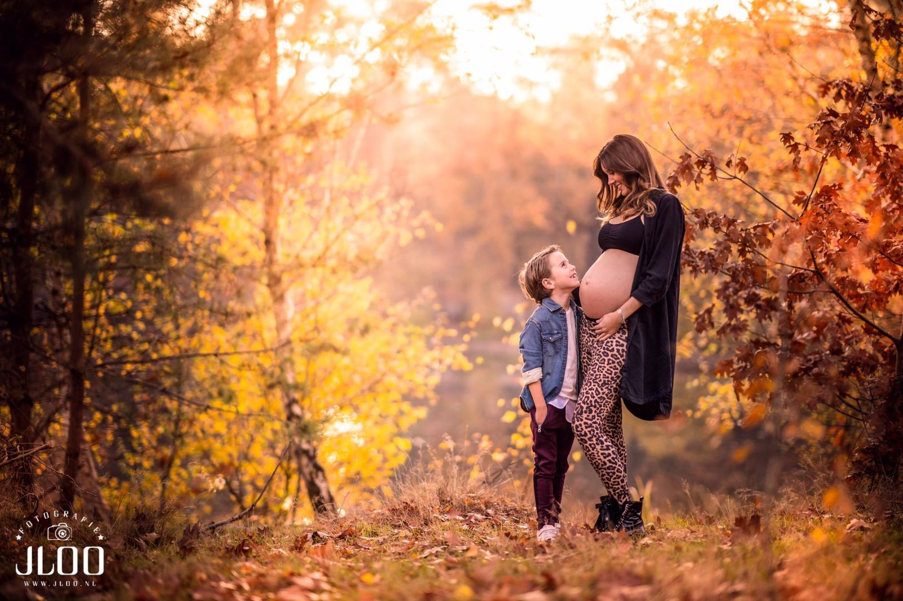
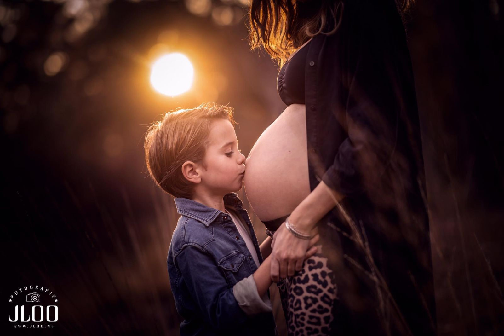
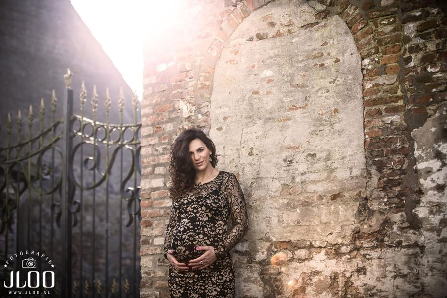
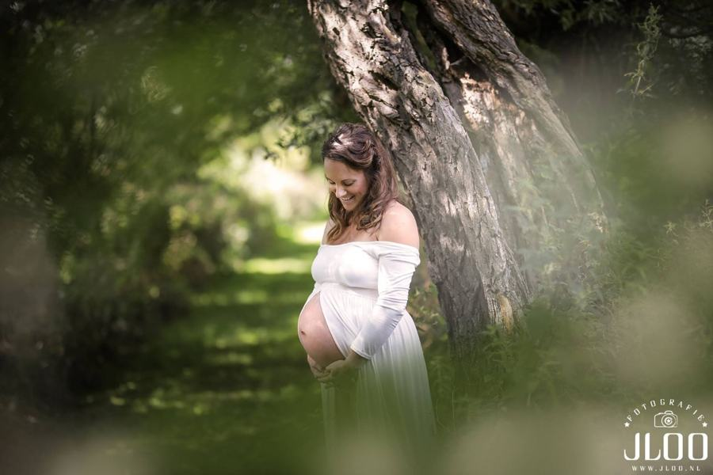
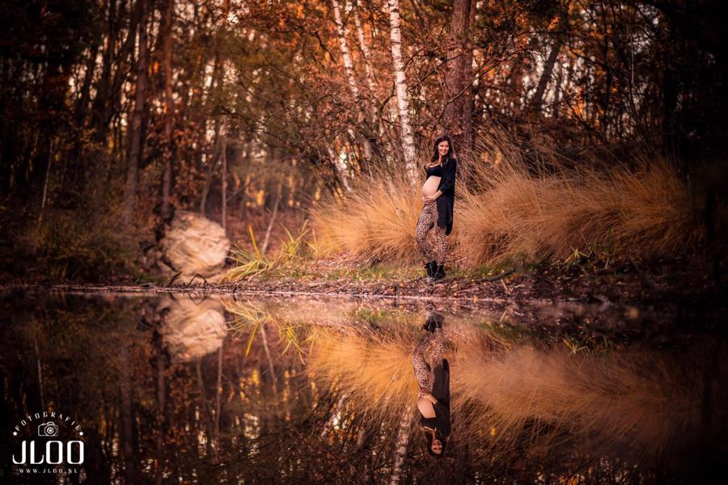
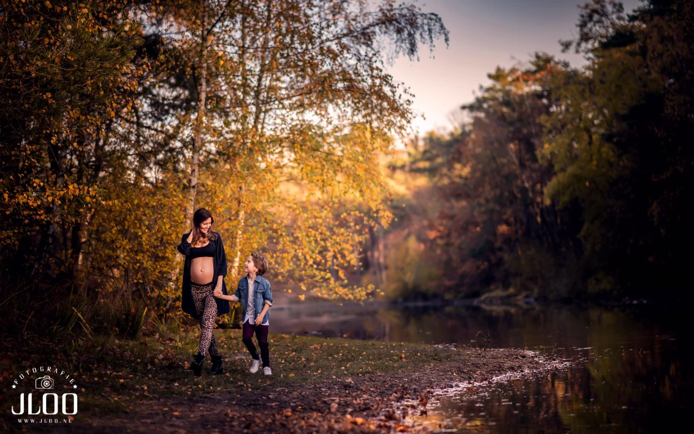

Zwangerschap
Het wachten, het groeien, de verwachting.
Zwangerschapsfotografie
Fotografie Jeffrey van der Loo · styling Lionne Toet
Negen maanden verwachting, vastgelegd in één serie. Buiten in het gouden licht of binnen in de studio, alleen of samen met je partner en kinderen.
We zoeken samen een stijl die bij je past: romantisch in een jurk tussen de bomen, of juist puur en ingetogen.


Het mooiste moment? Rond week 32.
Tussen week 30 en 34 is je buik mooi rond en voel je je meestal nog fit. Plan je shoot dus op tijd.
Veel ouders combineren de zwangerschapsshoot met een newbornshoot. Zo vertel je het hele verhaal, van verwachting tot eerste ontmoeting.





“Wauw wat een prachtige foto’s! We zijn er echt heel erg blij mee. Het resultaat is super! Jullie beide bedankt voor de super mooie foto’s en de goede zorgen.”Annat · Sprang-Capelle · Newborn
Praktisch
Op maat, zoals jij het wilt.
Elke zwangerschapsshoot stellen we samen met je samen: studio of locatie, alleen of met het hele gezin.
Vraag naar de mogelijkheden om deze shoot te combineren met een newbornshoot.
Pakket
tariefOp aanvraag
- Studio of buitenlocatie
- Met partner en kinderen
- Ideaal tussen week 30 en 34
- Te combineren met newborn
Neem contact op, dan maken we een voorstel dat bij je past.


Kennismaken
Vertel ons over jullie moment.
Een trouwdatum, een uitgerekende datum of gewoon een idee: stuur ons een berichtje. We reageren binnen 24 uur en nodigen jullie graag uit voor een kop koffie in de studio.
gemeente Heusden